Кейс · B2B CRM · Web · В процессе
CRM с нуля: от безопасного входа до структуры компании
BrandLogo CRM - рабочее пространство для команд, которые подбирают клиентам банковские и финансовые продукты. Проектирую продукт с нуля: фундамент, дизайн-систему и ключевые сценарии.
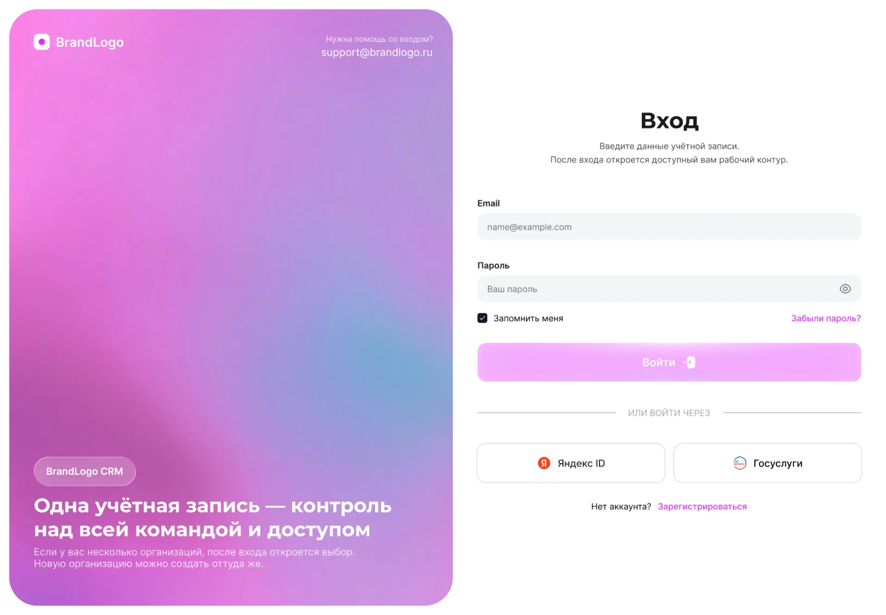

- Роль
- Продуктовый дизайнер
- Срок
- Осень 2026 - н. в.
- Платформы
- Web, desktop-first
- Команда
- PM, QA, аналитик, разработчики, дизайнер
- Мой вклад
- Исследования, UX, UI, дизайн-система, прототипы
Коротко о кейсе
Брокеры работают в россыпи инструментов: Excel, мессенджеры, почта, банковские порталы. Мы строим единое рабочее пространство, где у компании есть своя изолированная организация, структура отделов и понятные права. Первый этап - фундамент: вход, организации, безопасность и доступы, на которых вырастет вся CRM.
01 · Контекст
Для кого и зачем
Продукт для компаний, которые помогают клиентам получать банковские гарантии, кредиты, лизинг и другие финансовые продукты. В одной команде работают продажи, сопровождение клиентов, аналитики и руководители.
Несколько юрлиц · ПК
Владелец компании
Цель
Видеть всё и управлять доступами без помощи разработчиков.
Боль
Ведёт несколько компаний в разных системах, нет единой картины.
Отдел продаж, сопровождения
Руководитель отдела
Цель
Собрать команду и дать людям нужные права.
Боль
Права выдаются вручную, легко ошибиться или дать лишнее.
Клиенты, банки · ПК
Менеджер
Цель
Быстро войти и работать с клиентом, а не с системой.
Боль
Сложные входы и лишние шаги отвлекают от клиента.
HR и доступы · ПК
Администратор
Цель
Быстро онбордить сотрудника и контролировать безопасность.
Боль
Нет прозрачности: кто и к чему имеет доступ.
02 · Проблема
Как работают сейчас
Рабочий день менеджера складывается из переключений между системами, а права доступа держатся на договорённостях.
Сейчас
Риск
Клиентские и финансовые данные лежат в общих файлах и чатах без контроля доступа
Потери
Данные дублируются и расходятся между Excel, почтой и порталами банков
Рост
Новые сотрудники и отделы подключаются хаотично, а структура компании нигде не зафиксирована
Масштаб
Владельцу с несколькими организациями приходится держать несколько учётных записей
03 · Исследование
Что мы узнали
Стартовали с исследования: говорили с владельцами и менеджерами, разбирали процессы и смотрели, как устроены аналоги.
Инсайт 1
Безопасность не должна мешать работе
Менеджеры бросают сложные входы, а владельцам нужна жёсткая защита.
→ Решение
Обязательный второй фактор для владельцев и администраторов, понятный и быстрый вход для остальных.
Инсайт 2
Одна компания - много контуров
Владельцы ведут несколько юрлиц и не хотят несколько аккаунтов.
→ Решение
Один аккаунт, выбор организации после входа, полная изоляция данных.
Инсайт 3
Права - это про отделы, а не про людей
Руководители мыслят структурой компании, а не списком разрешений.
→ Решение
Схема отделов как главный инструмент и права через должности с точечными исключениями.
Принципы дизайна
Безопасно по умолчанию
Один аккаунт - много организаций
Права видны и объяснимы
Сначала понятность, потом возможности
04 · Процесс
Как строим продукт
Идём от основания к ядру: сначала вход, организации и права, потому что от них зависят все остальные модули.
2 нед.
Исследование и процессы
- 9 интервью и карта процессов команд
- Конкурентный аудит 4 CRM
- Выбор 12 приоритетных сценариев
2 нед.
Модель доступов и структура
- Организации, отделы, должности, роли
- Карта модулей продукта
- Правила изоляции данных
3 нед.
Прототипы входа и организаций
- Вход, регистрация, 2FA, выбор организации
- Тесты на 8 пользователях
- Правки по итогам тестов
Параллельно
UI-kit и дизайн-система
- Токены цвета и типографики
- 50+ компонентов и состояния
- Документация для разработки
Сейчас
Ядро CRM
- Компании и обзор кейса
- Парсинг КИ и фоновые процессы
- Дашборд и работа с клиентом
05 · Структура продукта
Шесть областей и статус каждой
Навигация строится вокруг работы с клиентом. Фундамент уже спроектирован, ядро CRM в работе.
Аккаунт и организации
Вход · Регистрация · Безопасность · Выбор организации
Структура и отделы
Схема отделов · Роли и доступы · Состав и права
CRM
Компании · Обзор кейса · Парсинг КИ · Фоновые процессы
Работа с клиентом
Коммуникации · История · База знаний
Финансовые инструменты
Калькуляторы · Финансовый анализ · Банки и платформы
Рабочее пространство
Дашборд · Чаты · Уведомления
06 · Ключевое решение 1 / 5
Вход и регистрация без трения
Первый контакт с продуктом: быстро, понятно и без лишних шагов, но с защитой, которой достаточно для финансовых данных.
ПРОБЛЕМА
В CRM лежат клиентские и финансовые данные, но типовые формы входа либо слишком простые, либо раздражают лишними шагами.
РЕШЕНИЕ
Экран входа с понятными состояниями, вход через Яндекс ID и Госуслуги и регистрация в два шага с согласиями и индикатором прогресса.
ЭФФЕКТ
В тесте прототипа 7 из 8 пользователей прошли регистрацию без подсказок. Цель по времени до первого входа: до 2 мин.

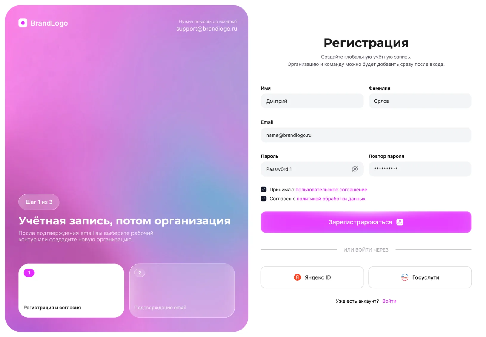
Ключевые действия
- Проработал состояния формы: пусто, заполнено, ошибка, загрузка
- Добавил вход через Яндекс ID и Госуслуги, привычные для аудитории
- Разделил регистрацию на «аккаунт» и «организация», чтобы не перегружать первый шаг
07 · Ключевое решение 2 / 5
Подтверждение email без тупиков
Письма опаздывают, ссылки протухают. Пользователь не должен потеряться на этом шаге.
ПРОБЛЕМА
Если письмо не пришло или ссылка просрочена, пользователи уходят и не возвращаются, а поддержка получает лишние обращения.
РЕШЕНИЕ
Три состояния: ожидание с таймером повторной отправки, успешное подтверждение и просроченная ссылка с быстрым запросом нового письма. Рядом подсказки про «Спам» и смену адреса.
ЭФФЕКТ
В тесте никто не потерялся на этом шаге. Цель: не менее 90% подтверждают email с первого письма.
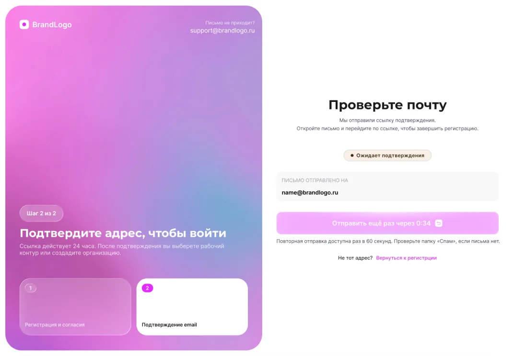
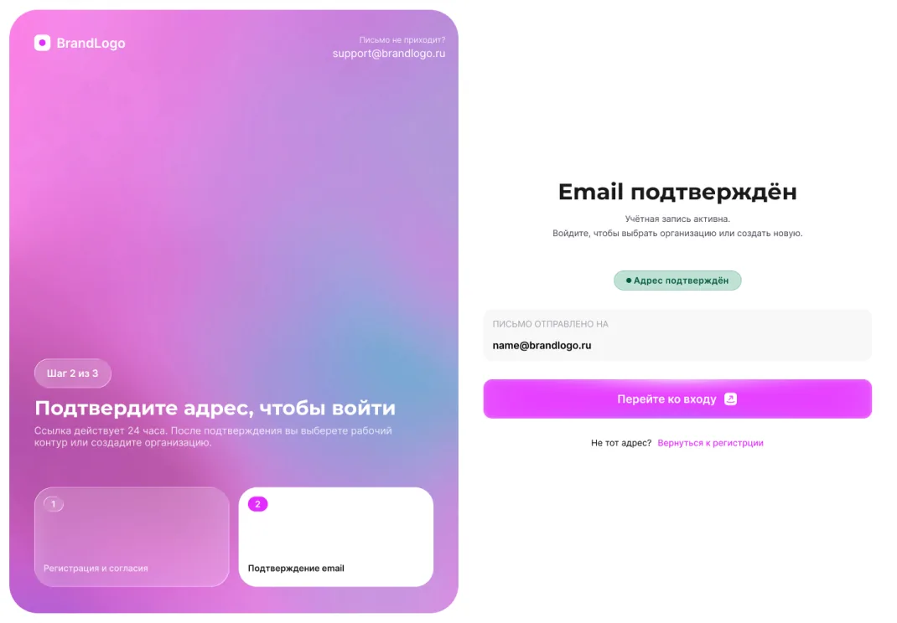
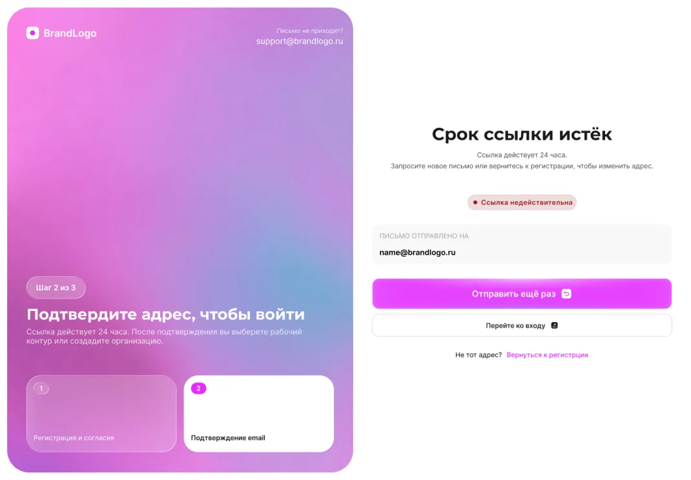
Ключевые действия
- Описал все состояния, включая ошибки и повторную отправку
- Добавил таймер, чтобы ограничить повторные отправки без раздражения
- Дал пользователю выход: сменить адрес и вернуться к регистрации
08 · Ключевое решение 3 / 5
Второй фактор и выбор организации
Одна учётная запись может работать в нескольких компаниях с разными ролями, а владельцам и администраторам нужна обязательная защита.
ПРОБЛЕМА
Владельцы ведут несколько юрлиц и не хотят несколько аккаунтов, но данные организаций должны оставаться изолированными.
РЕШЕНИЕ
Ввод 6-значного кода с резервным способом, затем выбор организации с ролью и последней активностью и создание новой организации в том же окне.
ЭФФЕКТ
Данные организаций изолированы, 2FA обязательна для владельцев и администраторов. Цель: не менее 70% включают второй фактор в первый месяц.
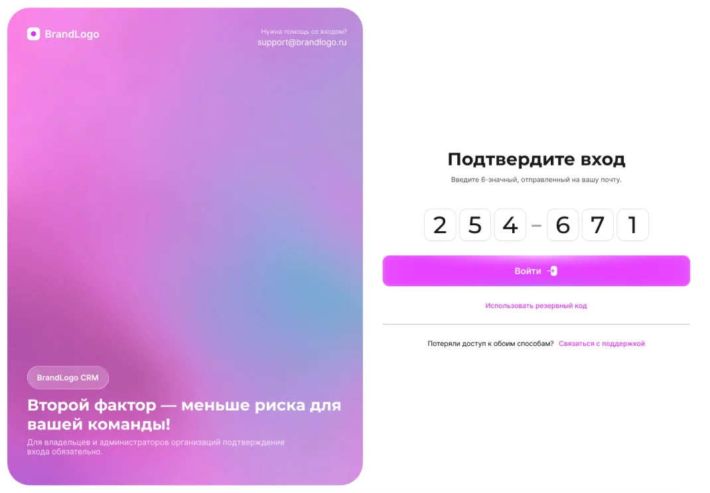
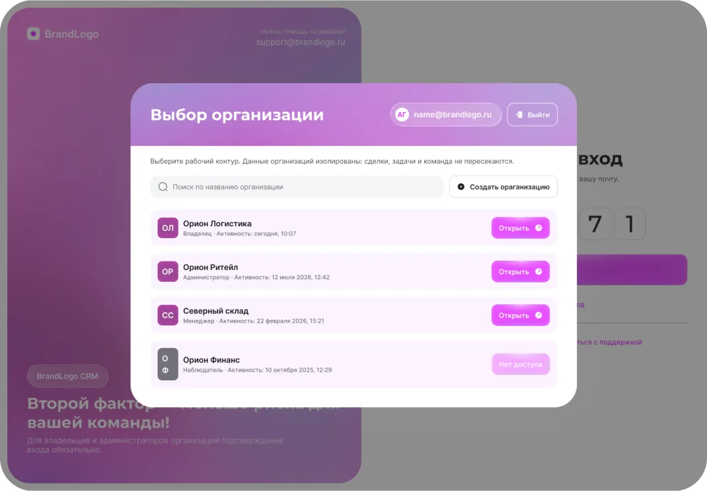
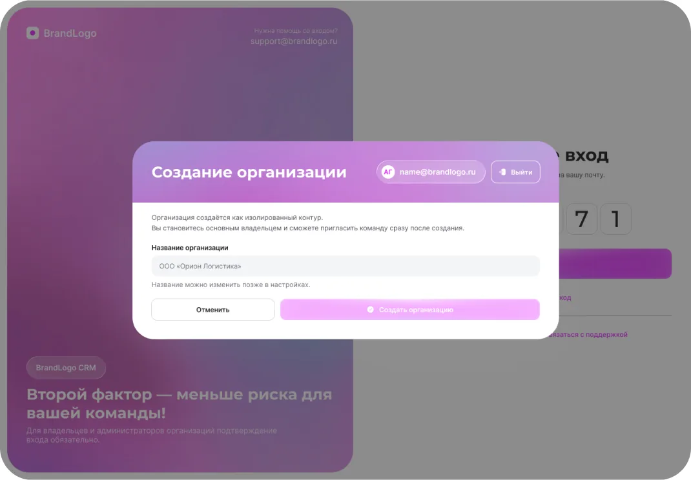
Ключевые действия
- Спроектировал ввод кода по ячейкам с понятными состояниями и резервным кодом
- Показал в списке организаций роль и последнюю активность, чтобы не ошибиться контуром
- Оставил недоступные организации в списке с объяснением, а не скрыл их
09 · Ключевое решение 4 / 5
Безопасность аккаунта под контролем пользователя
Пользователь видит, где открыт его аккаунт, что происходило и как защитить вход.
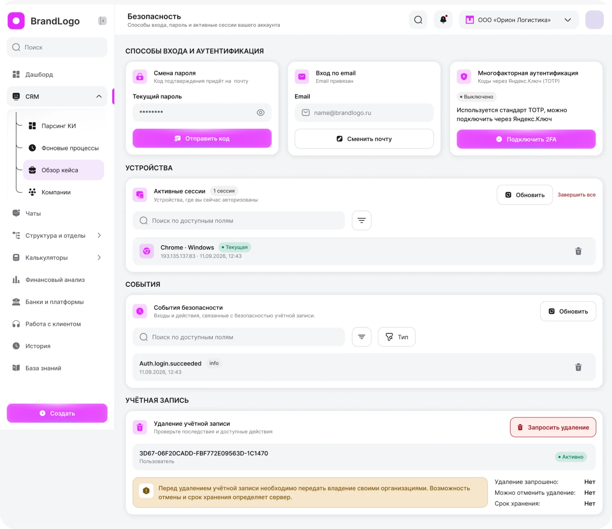
Проблема
Пользователи не видели активные сессии и события входа, а удаление аккаунта грозило потерей организаций.
Решение
Единый экран: смена пароля, вход по email, подключение 2FA через TOTP, активные сессии с завершением, журнал событий и безопасное удаление с передачей владения.
Эффект
Цель: −50% обращений в поддержку по входу и сбросу пароля после запуска.
Ключевые действия
- – Сгруппировал настройки по задачам пользователя: вход, устройства, события, аккаунт
- – Показал опасные действия отдельно и с объяснением последствий
- – Добавил журнал событий безопасности для расследования инцидентов
10 · Ключевое решение 5 / 5
Структура и права: схема отделов вместо таблицы разрешений
Руководители мыслят структурой компании, поэтому права настраиваются через отделы, должности и точечные исключения.
ПРОБЛЕМА
Права выдавали вручную по каждому сотруднику, что приводило к ошибкам и лишним доступам, а структура компании нигде не была зафиксирована.
РЕШЕНИЕ
Визуальная схема отделов с индикатором синхронизации, панель отдела с вкладками «Отдел / Состав / Доступ», базовые права через должности, персональные исключения и настройка доступа к полям: телефон, email, финансовые данные.
ЭФФЕКТ
В тесте 6 из 8 владельцев собрали схему без помощи. Цель: настройка структуры компании за 15 минут вместо нескольких часов.
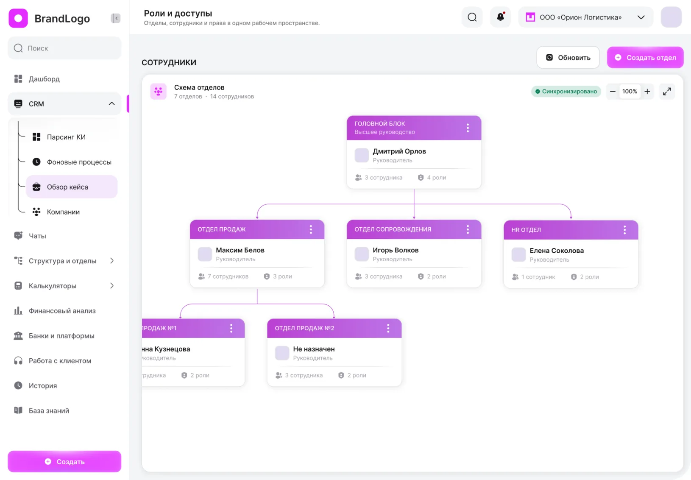
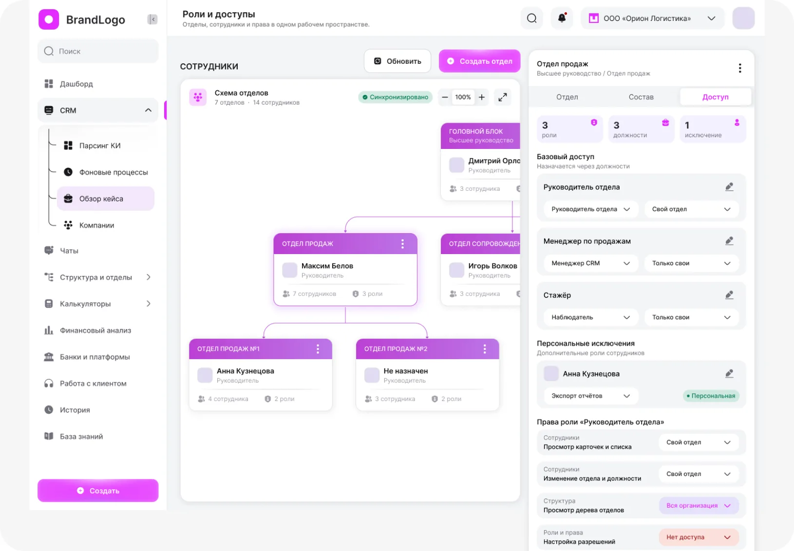
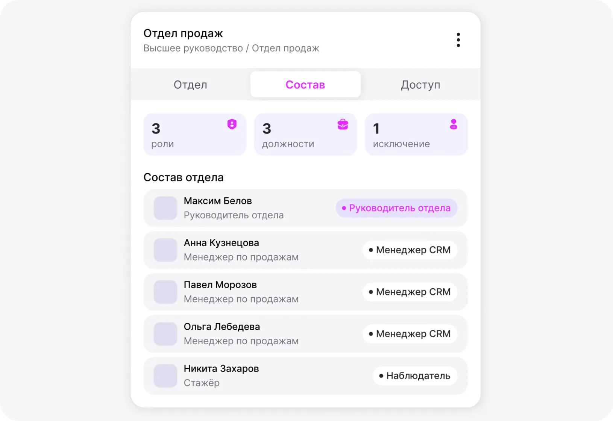
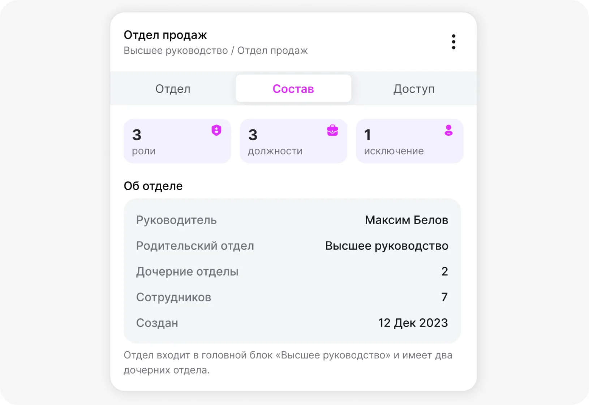
Ключевые действия
- Выбрал схему отделов как главный интерфейс, а таблицу разрешений убрал в панель отдела
- Сделал итоговый доступ объяснимым: роль должности плюс персональные исключения
- Ввёл три уровня доступа к чувствительным полям: просмотр, маска, скрыто
11 · Дизайн-система
UI-kit с первого дня
Разработка и дизайн идут параллельно, поэтому система собиралась вместе с первыми экранами и сразу использовалась.
Цвет
Типографика
- Заголовки: Montserrat · Данные: Inter
- Основной текст и поля ввода, 16
- Подписи и подсказки, 12
Компоненты и состояния
12 · Цели и первые сигналы
Что уже видно и к чему идём
Проект в разработке: ниже первые сигналы по тестам прототипов и целевые показатели. Итоговые метрики добавлю после релиза.
13 · Что дальше
Куда движется проект
Сделано
- Исследование и карта процессов
- Вход, регистрация, 2FA
- Организации и изоляция данных
- Безопасность аккаунта
- Схема отделов, роли и права
- UI-kit: 50+ компонентов
В работе
- Ядро CRM: компании и обзор кейса
- Парсинг КИ и фоновые процессы
- Расширение UI-kit: таблицы, фильтры, карточки
- Тесты ядра на реальных сценариях
Дальше
- Дашборд с метриками команды
- Калькуляторы, банки и платформы
- Чаты и работа с клиентом
- Метрики использования и итоговые результаты
Другие проекты
Можете ознакомиться с моими другими проектами


Блок для связи.
Поработаем вместе?
Напишите мне в телеграм
- Email:
- mountdsgn@mail.ru
- Phone
- +7 (918) 321-26-35